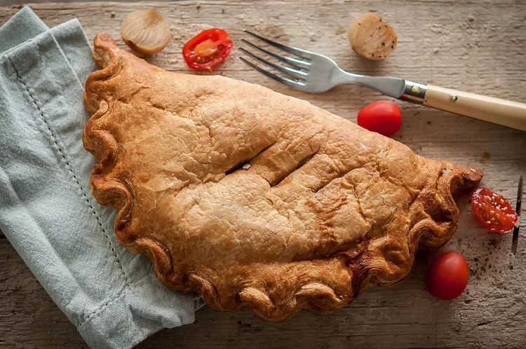

Welsh Oggie

Description
The Oggie is the Welsh equivalent of a Cornish Pasty, which is basically a British empanada. In both Cornwall and Wales, the savory handheld pastries
were given to miners to eat on the job when they couldn't make it topside for lunch. One legend has it that "It is said the mark of a good oggie/pasty was surviving being
dropped down a mine shaft."
Unlike the empanada however, instead of beef or pork, the oggie is traditionally filled with lamb and leeks.
Ingredients (serves 2)
For the Pastry
- 6 ounces (200 grams) all-purpose flour
- 1 pinch salt
- 2 ounces (55 grams) butter
- 2 ounces (55 grams) lard
- 2 to 3 tablespoons cold water
For the Filling
- 1 ounce (26 grams) unsalted butter
- 1/2 cup (25 grams) leeks, sliced
- 6 ounces (200 grams) potatoes, cut into large chunks
- 6 ounces (200 grams) lamb, cut into small cubes
- Salt, to taste
- Freshly ground black pepper, to taste
- 1 large egg, lightly beaten
Steps
- Gather the ingredients and preheat oven to 425°F or 220°C.
- Create the dough
- Place the flour, butter, lard and salt into a food processor.
- Mix on a pulse setting until the mixture resembles breadcrumbs, add the water,
slowly, through the funnel until the dough comes together in a ball.
- Wrap in clingfilm or plastic wrap and rest the pastry for 30 minutes.
- Meanwhile, melt the butter in a saucepan, add the leeks and cook on a low heat for 5 minutes.
- Add the potato chunks to the pan and cook for another 5 minutes.
- Add the lamb pieces and brown all over, cook for 2 minutes, cover with a lid and cook over a low heat for 6 minutes.
Season the contents of the pan with salt and pepper and leave to one side to cool.
- Divide the pastry into 2 and roll each piece into rounds approximately 22 centimeters. Brush the rounds with beaten egg.